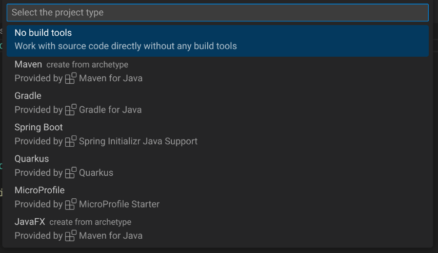
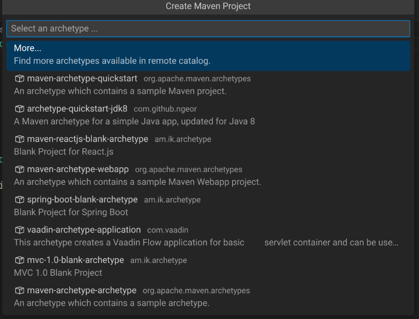
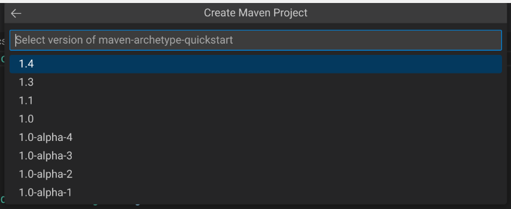
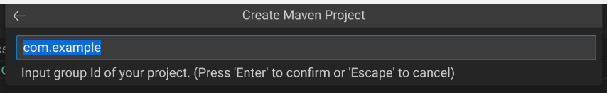
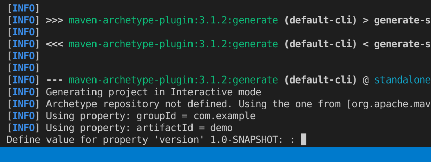
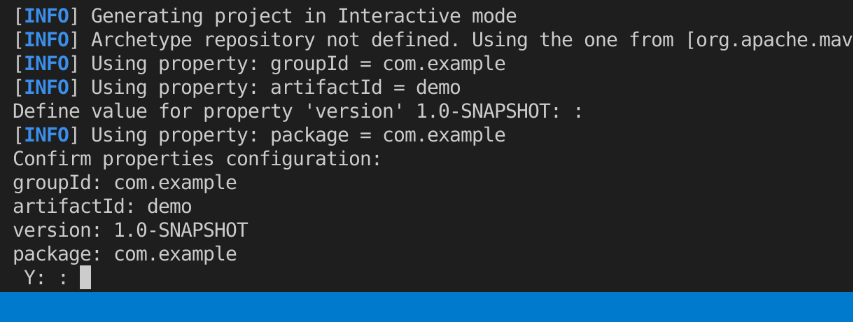
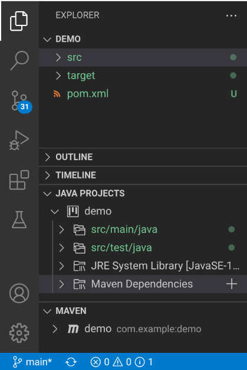
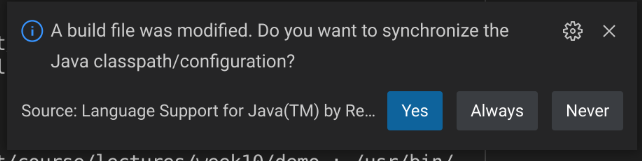

We’ve previously installed the extension pack for Java in VS Code.
This actually comes with “Maven for Java”. Let’s learn how to use that
to create a new project with Maven.
Maven
So far we’ve talked about dependency management (with Python’s
pip) and build management (with make).
Maven is both a dependency
and build management tool. Where pip is pretty minimal (it
only downloads dependencies and their dependencies and their
dependencies and their dependencies and…), and make is…
make, Maven is pretty comprehensive in what it does.
When we looked at make, one thing you might notice is
that make has very few opinions about how you should create
a Makefile. Yeah, we’ve got the idea of rules, targets,
dependencies, commands, but you kind of have to do everything yourself.
If you want a clean target, you have to write it. If you
want an all target, you have to write it. While I might
like to call my clean target clean, someone
else might call it cleanup, and the only way we can
reliably know is to look at the Makefile and read it. This
is a long way to say that make is extremely unopinionated
about everything except for tabs vs spaces.
Maven, on the other hand is extremely opinionated:
A Java project that uses Maven must adhere to a very specific folder
structure (src/main/java, src/test/java,
etc).
Maven has well-known and specified names for “goals”
(clean, package, etc).
Ideally this gets you two things:
If you know how to build and use one Maven project, you know how to
build and use all projects that use Maven (in theory), and
You can do pretty complex things with very little configuration (in
theory).
Create a project in VS Code
Let’s dive in. Start by opening VS Code. Normally you would create a
new file in VS Code using something like Control or
Command and N, or you would use the File → New
File… menu, or you would create a new file by right clicking in the
Explorer area and selecting New File… from the menu.
We’re going to do something a little bit different this time: we’re
going to open the “command palette” in VS Code. You can open the command
palette by pressing:
Control+Shift+P in Windows or
Linux, or
Command+Shift+P in macOS.
The command palette lets you type in generally what you want to do
and gives suggestions. Let’s create a new Maven Java project:
Start by beginning to type, then selecting “Create Java
Project…”.
Select “Maven Create from archetype”.

Choose “Maven Create from
archetype”.
Select “maven-archetype-quickstart”.

Choose
maven-archetype-quickstart.
You can choose any version here, but I would recommend version
1.4.

Choose 1.4.
Next you’re going to get to enter two values: a “group Id” and an
“artifact Id”.

Enter your group Id.
Group Id
Sort of like the organization or … group where one or more projects are
related to each other.
Is often a domain name reversed (e.g.,
ca.umanitoba.cs.www).
Artifact Id
The name of the project that you’re going to build.
You’re welcome to use the default values for this
(com.example and demo) but when you create
your own projects later you should pick more meaningful group and
artifact Ids.
VS Code is going to prompt you to choose a directory where this
project is going to live. Maven is going to create a new directory with
the same name as the artifact Id within the folder you select.
The first time you do this, Maven is going to download a
bunch of stuff. This may take several minutes to complete.
You can monitor the progress of what’s happening in the terminal
that opens at the bottom of your VS Code window. Eventually, Maven is
going to prompt you to enter a version number for your project:

Enter a version number for your
project
Why didn’t it ask when asking for group and artifact Ids?!
You can safely accept the default by pressing Enter, or
you can enter something different.
Finally, (finally!), you can confirm the group and artifact Ids
and the version number that you selected by pressing
Enter:

Confirm the details.
If everything has worked out, your VS Code should now have the
project open, and your explorer pane should show some folders and
files:

The open Maven project.
In the “Java Projects” pane, expand src/main/java, then
com.example (or whatever group Id you picked, this is the
prefix of your package names in your project now), and open
App. 🎉, you
just created a new Java project with Maven support.
Adding dependencies
Ok? Awesome? This was a lot of work to not have to type in a “Hello,
world!” project in Java.
Yeah, OK, so you not having to type in
public static void main(String[] args) is fine, it’s not
exactly a major benefit justifying the existence of Maven.
One of the major reasons to want to use Maven is to very quickly be
able to download and use dependencies to your Java projects.
Dependencies in Java are kind of painful in a way that they aren’t in
Python with pip: you have to download a JAR file, put the
JAR file near your .java and .class files,
configure your CLASSPATH… It’s not great.
Adding a new dependency to a Java project using Maven is
straightforward.
Open the file named pom.xml, this file got created when
you created the project.
pom.xml is the configuration file for your project that
Maven uses to do things like specify the dependencies for your
project.
We’re going to do two things here:
Find out how to find dependencies.
Add the dependency to our pom.xml.
Let’s actually start by breaking our Java program: replace the
contents of App.java with the following:
This is a small chunk of code that will create a JSON object; it’s not
exactly important what the code is doing, just that it requires a
dependency (org.json).
Finding dependencies
Some projects will straight-up give you the information that you need
to add them as a dependency to your pom.xml, but we’ll look
at a way to find a dependency.
Start by opening your web browser and going to https://mvnrepository.com. This is a comprehensive
listing of dependencies that you can use in your Java project.
Let’s look specifically for something to help us use JSON in our project. At
the top of the page is a search field, enter “json” and press
Enter.
The first artifact that’s listed is json with a group Id
of org.json. Click on json.
You’re going to see lots of versions, click on the most recent version
at the top of the table.
In the middle of this page is a tabbed view with different tool names
(Maven, Gradle, Gradle, Gradle, SBT, Ivy, …). Maven is the default.
There’s a text area here where you can select some text. This is XML,
the same format as pom.xml. Click on the text area and it
should automatically copy this to your clipboard. If it
doesn’t, highlight the text and copy it.
Add the dependency to
pom.xml
Now switch back to VS Code, open pom.xml, and add this
dependency below the </dependency> for
junit:
As soon as you save, VS Code is going to ask if you want to
“synchronize” the project:

Do you want to synchronize?
You do! Click “Yes”!
Now go back to App.java. It compiles! Run the program
the way you did when you were debugging!
You just added a dependency to a Java project and used that
dependency 🎉!
Further reading
We’ve done the bare minimum here with Maven, but it’s enough to get
us started.
You can read more about this in a few places:
VS
Code’s documentation for Java projects gives you some more about
using VS Code for Java development, including more about how to use the
Maven for Java extension.
The Maven home page has
comprehensive documentation about how to use Maven.
You can read more about other build and dependency management tools
like Gradle, Ivy, or Ant. Gradle is popular because it’s
typically the build and dependency management tool used for Android app
development.